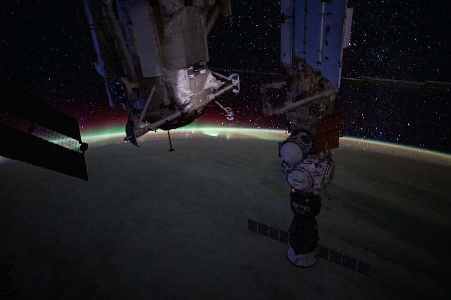
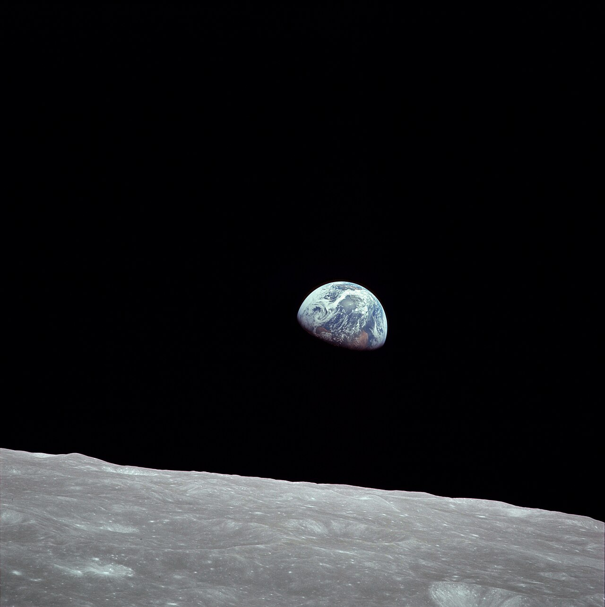
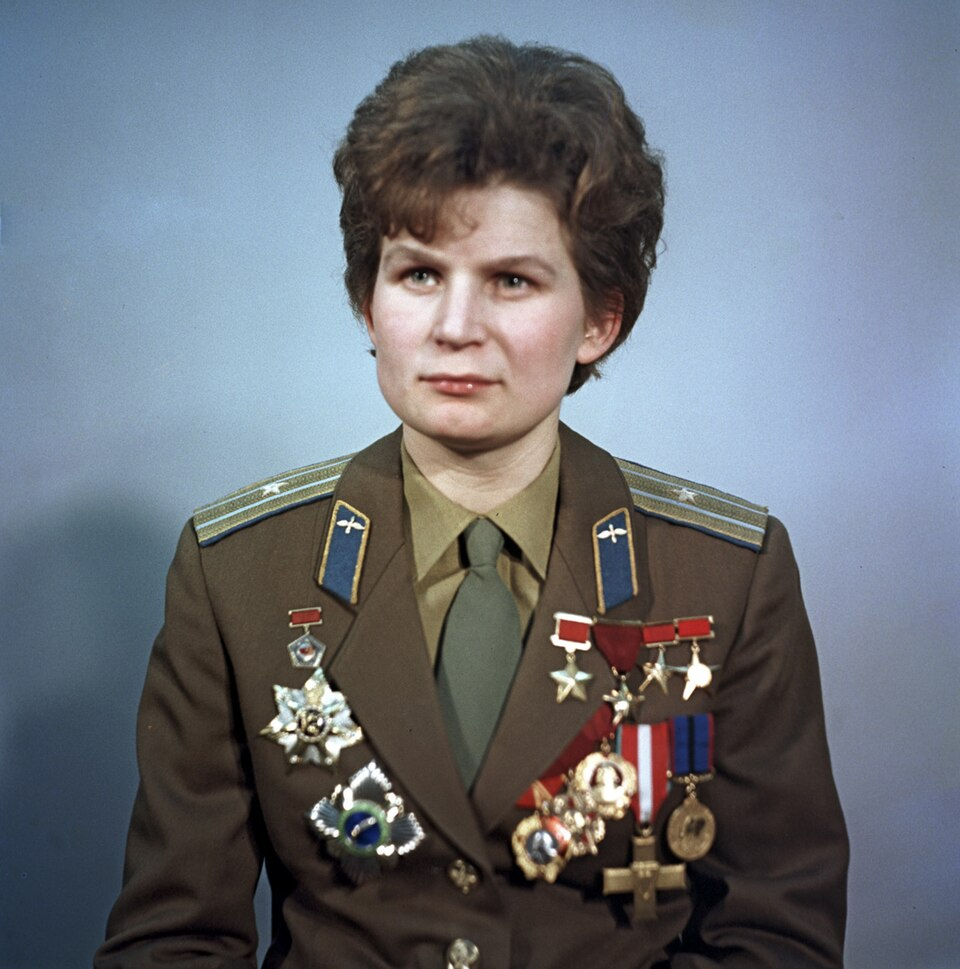
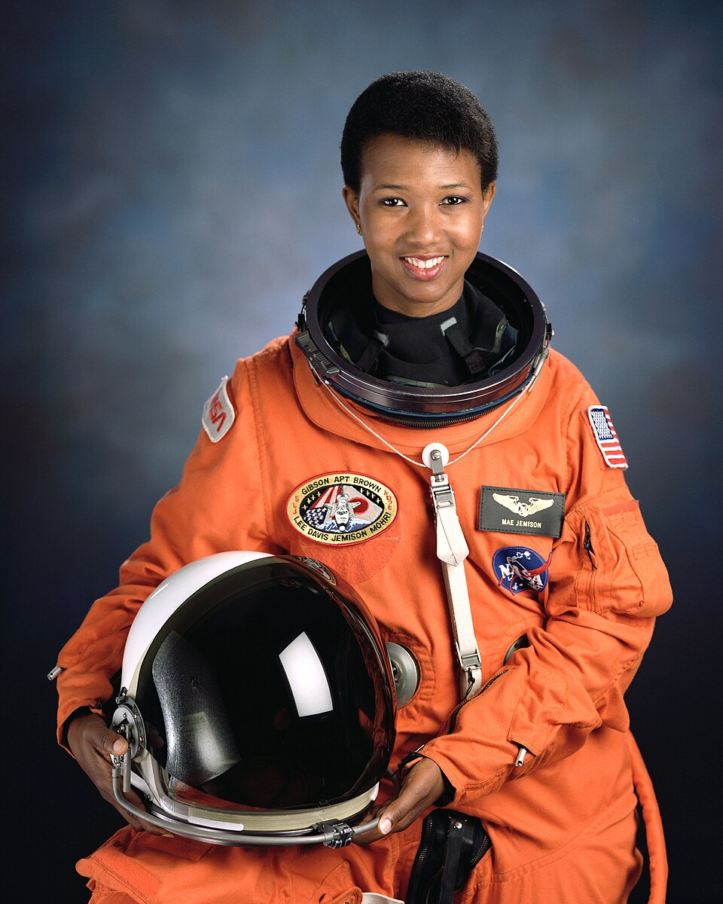
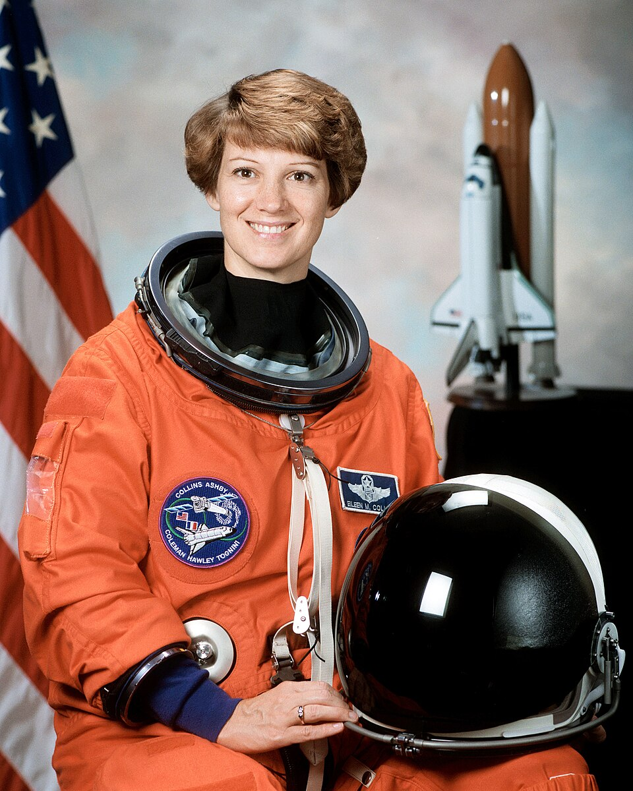
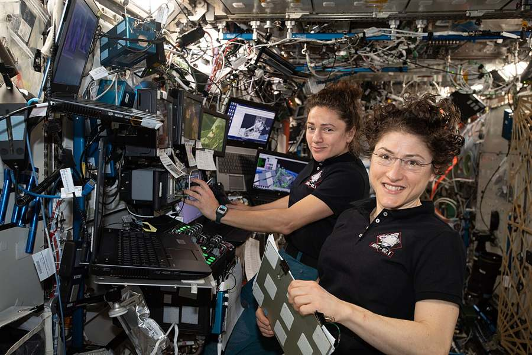
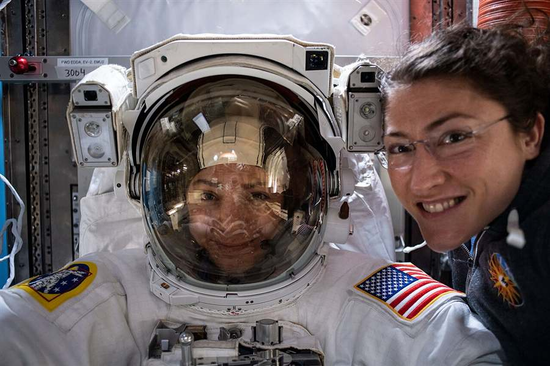
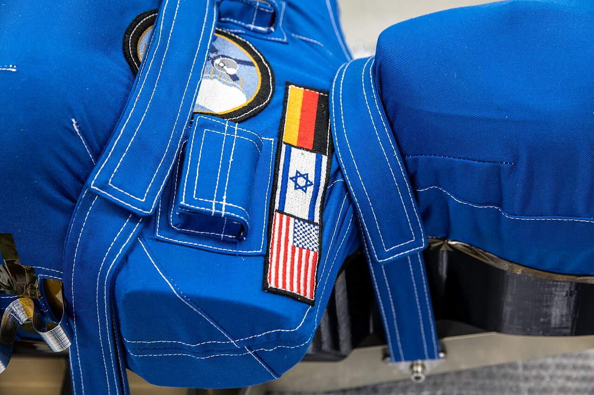

Ad astra, for all.
Closing the sex gap in aerospace.
Closing the sex gap in aerospace.
A youth-led accelerator and collaboration hub advancing women in space. For every woman in the industry: doctors, engineers, designers, astronauts. For an equitable future in human spaceflight.
Our goal is not just to identify gaps, but to build the research, projects, and partnerships that address them.
Ensure women are not an afterthought in space exploration

Change how the industry attends to women’s health

Build a leading hub for women’s health in space
Members across health, bioengineering, policy, and media, backed by advisors in bioengineering, governance, and finance.
Connecting researchers, students, clinicians, engineers, policymakers, and communicators.
Institutional network
NASA, Harvard, MIT, Oxford, Stanford, Mayo Clinic, Virginia Tech, Rutgers, and IEEE.
Six decades of women in space, and of the research catching up with them.

1963Valentina Tereshkova orbits Earth 48 times aboard Vostok 6.
 1983
1983
Sally Ride flies on the Space Shuttle Challenger.

1992Mae Jemison, physician and engineer, flies aboard Endeavour.
A US law requires women to be included in NIH-funded clinical research.

1999Eileen Collins leads a Space Shuttle mission.

2014NASA reviews how women’s and men’s bodies adapt to spaceflight, and how thin the data is.

2019Christina Koch and Jessica Meir step outside the International Space Station.

2022Two phantom torsos modelled on the female body, Helga and Zohar, fly around the Moon on Artemis I.
The next chapter is ours to write. Ad astra, for all.
Join a team, sponsor, collaborate, or support our work.